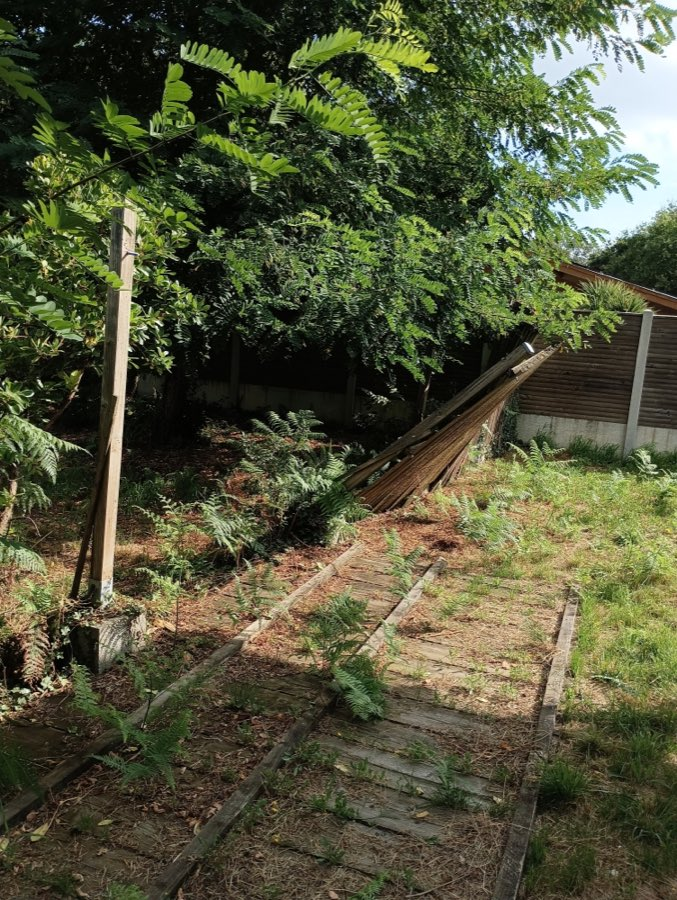
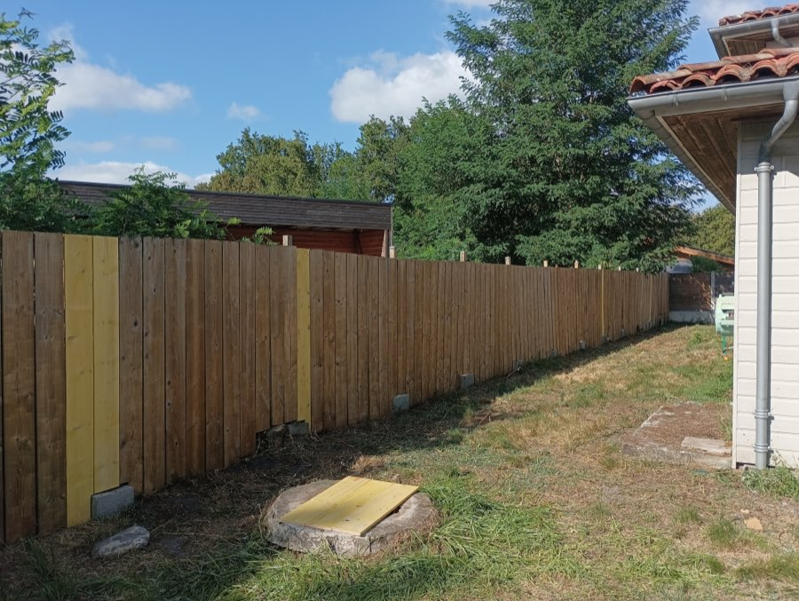
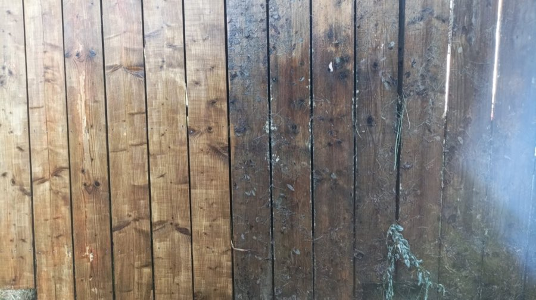

Vous avez remarqué un de ces signes chez vous ?
- Des petits trous à la surface des poutres, du parquet ou des meubles
- De la sciure fine (vermoulure) au sol ou sous les boiseries
- Un bois qui sonne creux ou qui s'effrite par endroits
- Des galeries visibles dans le bois
- Des insectes ailés à l'intérieur, surtout au printemps
Un seul de ces signes suffit pour nous contacter : décrivez ce que vous voyez, le devis est gratuit et sans engagement.

Traitement des insectes xylophages : identifier et éliminer
Comment reconnaître des insectes xylophages ?
Les insectes xylophages se nourrissent du bois ou y creusent leurs galeries. Les signes d'une infestation :
- Petits trous à la surface des poutres, parquets, escaliers ou meubles (ovales de 6 à 10 mm pour le capricorne)
- Sciure ou vermoulure au sol et sous les boiseries
- Bruits de grignotage dans le bois, surtout la nuit
- Bois qui sonne creux, s'effrite ou se feuillette
- Insectes ailés qui essaiment au printemps
Nous sommes spécialisés dans les trois espèces qui causent l'essentiel des dégâts dans la région : les termites, le capricorne des maisons et les fourmis charpentières. Chacune a sa page dédiée ci-dessous pour identifier précisément ce qui attaque vos bois.
Les insectes xylophages, est-ce dangereux ?
C'est la menace la plus sournoise pour une maison : les larves travaillent sous la surface pendant des années sans signe visible. Une charpente peut perdre sa capacité portante avant que le premier trou apparaisse. En Gironde, l'état parasitaire est d'ailleurs obligatoire à la vente dans de nombreuses communes, précisément parce que le département est très exposé. Plus l'infestation s'étend, plus le traitement des insectes xylophages est lourd et coûteux.
Une visite technique avant tout traitement. Notre technicien identifie l'espèce, mesure l'étendue de l'infestation et vous propose le traitement du bois adapté, sans engagement.
Notre méthode de traitement du bois
- 1. Visite technique : inspection complète, sondage, identification de l'espèce
- 2. Préparation des bois : bûchage des parties vermoulues
- 3. Traitement adapté : injection en profondeur et pulvérisation pour le bois intérieur, barrière ou pièges pour les termites, traitement ciblé des colonies de fourmis
- 4. Garantie et suivi : garantie de résultat et prévention de la réinfestation
Traitement xylophage : quel prix ?
Le tarif dépend de l'espèce et de l'étendue. Repères concrets : un traitement de bois localisé démarre à partir de 1 000 € ; un traitement complet de charpente par injection démarre à partir de 1 500 €. La visite technique débouche sur un devis précis et sans engagement, avec un tarif clair avant toute décision.
Une entreprise spécialisée dans le traitement des xylophages
LSR Habitat est une entreprise familiale de traitement du bois et de lutte contre les insectes xylophages en Gironde. Sans sous-traitance : le technicien qui diagnostique est celui qui traite. Produits certifiés, garantie de résultat, 5,0/5 sur 19 avis Google. Intervention dans toute l'Aquitaine, depuis notre base de Gironde.
Société de traitement des insectes xylophages, nous sommes le spécialiste des trois espèces qui attaquent les bois en Aquitaine : capricorne des maisons, termites et fourmis charpentières. Artisan certifié Certibiocide, notre expert applique un traitement xylophage professionnel au prix annoncé : chaque tarif est détaillé ligne par ligne dans le devis, sans surprise sur la facture.
Découvrez aussi nos services spécialisés
Chantiers récents
Réparation et mise en place d'une clôture bois avec traitement anti-xylophages.


